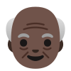
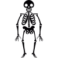

Our Services

Geriatric Physiotherapy
Our geriatric physiotherapy services address conditions such as:
- Arthritis
- Osteoporosis
- Balance disorders
Pediatric Physiotherapy
We specialize in pediatric physiotherapy to support children with conditions like:
- Cerebral palsy
- Developmental delays
- Muscular dystrophy
Neurology
Our neurology services focus on diagnosing and treating conditions such as:
- Stroke
- Traumatic Brain Injuries
- Parkinson's disease

Musculoskeletal
We offer specialized musculoskeletal services to address issues like:
- Back pain
- Sports injuries
- Joint replacements
Post Surgery Recovery
Our post-surgery recovery services focus on:
- Pain management
- Mobility restoration
- Strength rebuilding
Consultation Services
Our consultation services provide:
- Expert advice
- Personalized treatment plans
- Ongoing support